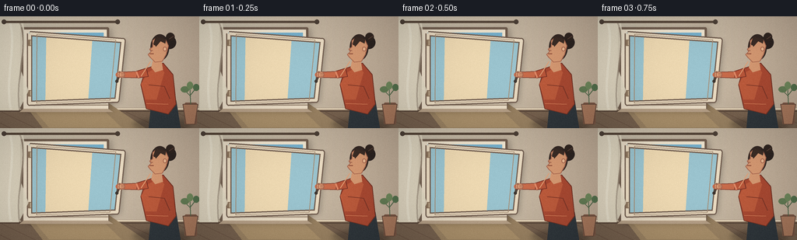
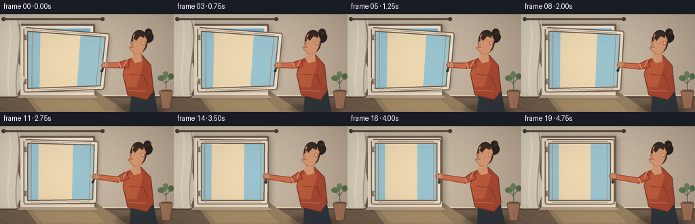

CODING AGENTS AS PIXEL WORLD MODELS
traex/GPT-5.6-Sol · motion_rationality_0043
点击播放 · 原生 RGB 像素
逐轮保存的候选
回放视频、检查图与代码变化。
每份候选均可单独播放。实际图片检查记录在下方工具轨迹中。
候选 01播放与检查图
点击播放 · 原生 RGB 像素


展开代码变化
--- 上一保存版本
+++ 本次保存版本
@@ -0,0 +1,214 @@
+from pathlib import Path
+import math
+import numpy as np
+from PIL import Image, ImageDraw, ImageFilter
+import artifact_io
+
+W,H,N,S = 256,144,20,4
+ROOT = Path(__file__).resolve().parent
+rng = np.random.default_rng(43)
+# Fixed, subtle film grain keeps the hand-painted scene from looking sterile.
+grain = rng.normal(0, 1.45, (H,W,1))
+
+def scp(p): return tuple(int(round(v*S)) for v in p)
+def poly(d, pts, fill, outline=None, width=1):
+ d.polygon([scp(p) for p in pts], fill=fill)
+ if outline: d.line([scp(p) for p in pts+[pts[0]]], fill=outline, width=width*S, joint='curve')
+def line(d, pts, fill, width=1): d.line([scp(p) for p in pts], fill=fill, width=width*S, joint='curve')
+def ell(d, box, fill, outline=None, width=1): d.ellipse(scp(box), fill=fill, outline=outline, width=width*S)
+def rect(d, box, fill, outline=None, width=1, radius=0):
+ if radius: d.rounded_rectangle(scp(box), radius=radius*S, fill=fill, outline=outline, width=width*S)
+ else: d.rectangle(scp(box), fill=fill, outline=outline, width=width*S)
+def bezier(p0,p1,p2,p3,n=20):
+ out=[]
+ for u in np.linspace(0,1,n):
+ q=(1-u)**3*np.array(p0)+3*(1-u)**2*u*np.array(p1)+3*(1-u)*u*u*np.array(p2)+u**3*np.array(p3)
+ out.append(tuple(q))
+ return out
+
+def ease(x):
+ x=max(0,min(1,x)); return x*x*(3-2*x)
+
+def render(i):
+ # The action pauses briefly at both endpoints; this makes direction unmistakable.
+ t = ease((i-1)/16.0)
+ im = Image.new('RGB',(W*S,H*S))
+ px=np.array(im)
+ yy=np.linspace(0,1,H*S)[:,None,None]
+ top=np.array([205,194,174])[None,None,:]; bot=np.array([155,134,111])[None,None,:]
+ px[:] = (top*(1-yy)+bot*yy).astype(np.uint8)
+ im=Image.fromarray(px); d=ImageDraw.Draw(im)
+
+ # wall panels, afternoon light, floor
+ rect(d,(0,0,256,144),'#cbbda6')
+ # broad sunlit plaster gradient strips
+ for x in range(0,256,3):
+ q=x/255; col=(int(208-18*q),int(198-27*q),int(178-28*q))
+ rect(d,(x,0,x+3,119),col)
+ rect(d,(0,118,256,144),'#806b57')
+ poly(d,[(0,118),(256,118),(256,144),(0,144)],'#77624f')
+ line(d,[(0,119),(256,119)],'#ead9be',2)
+ line(d,[(0,122),(256,122)],'#513f34',1)
+ for x in range(-30,280,32): line(d,[(x,123),(x+44,144)],'#6b5545',1)
+ # light pool cast from the window
+ poly(d,[(29,110),(137,110),(187,144),(55,144)],'#9b8363')
+ poly(d,[(38,114),(126,114),(156,143),(63,143)],'#aa906b')
+
+ # soft frame shadow on wall
+ sh=Image.new('RGBA',im.size,(0,0,0,0)); sd=ImageDraw.Draw(sh)
+ sd.rounded_rectangle(scp((27,16,143,122)),radius=2*S,fill=(47,35,28,80))
+ sh=sh.filter(ImageFilter.GaussianBlur(4*S)); im=Image.alpha_composite(im.convert('RGBA'),sh); d=ImageDraw.Draw(im)
+
+ # Window recess and outside view
+ rect(d,(26,14,140,120),'#705d4e',radius=2)
+ rect(d,(30,17,137,117),'#f1e6d0')
+ rect(d,(36,21,133,113),'#94bfd0')
+ # sky gradient
+ for y in range(21,89,2):
+ q=(y-21)/68; col=(int(118+54*q),int(176+35*q),int(205+27*q),255)
+ rect(d,(36,y,133,y+2),col)
+ # soft clouds
+ ell(d,(48,31,79,40),(229,235,229,220)); ell(d,(69,34,105,42),(236,238,228,215))
+ ell(d,(104,27,127,34),(218,229,226,180))
+ # far roofs / city
+ poly(d,[(36,79),(51,73),(66,78),(81,65),(97,75),(113,69),(133,76),(133,113),(36,113)],'#6f8490')
+ poly(d,[(36,90),(49,84),(58,86),(58,113),(36,113)],'#9a7f6b')
+ poly(d,[(61,88),(73,80),(88,88),(88,113),(61,113)],'#ac9278')
+ poly(d,[(93,83),(112,75),(132,84),(132,113),(93,113)],'#8d796b')
+ for bx in [42,50,67,77,101,112,122]:
+ rect(d,(bx,93,bx+3,97),'#d6c68f')
+ # sill and left jamb
+ rect(d,(30,111,139,119),'#eee0c9')
+ poly(d,[(30,119),(139,119),(145,123),(25,123)],'#b6a087')
+ line(d,[(30,114),(139,114)],'#8e7762',1)
+ rect(d,(30,17,37,117),'#e9dcc7')
+
+ # open panel geometry: hinged at left and free edge moves left into the frame.
+ ht=np.array((38.,22.)); hb=np.array((38.,112.))
+ ft=(1-t)*np.array((158.,31.))+t*np.array((134.,22.))
+ fb=(1-t)*np.array((150.,108.))+t*np.array((134.,112.))
+ panel=[tuple(ht),tuple(ft),tuple(fb),tuple(hb)]
+ # panel's cast shadow sweeps toward the jamb while closing
+ shadow=Image.new('RGBA',im.size,(0,0,0,0)); sdraw=ImageDraw.Draw(shadow)
+ off=3.5*(1-t)+1
+ sdraw.polygon([scp((x+off,y+2)) for x,y in panel],fill=(25,31,32,68))
+ shadow=shadow.filter(ImageFilter.GaussianBlur(int((2.2+1.2*(1-t))*S)))
+ im=Image.alpha_composite(im,shadow); d=ImageDraw.Draw(im)
+ # translucent glass pane (view/reflection remains visible)
+ poly(d,panel,(155,196,207,74))
+ # reflected warm interior edge, stronger while angled
+ refl=[tuple(ht*.82+ft*.18),tuple(ht*.33+ft*.67),tuple(hb*.33+fb*.67),tuple(hb*.82+fb*.18)]
+ poly(d,refl,(238,217,178,int(34+38*(1-t))))
+ # casement wooden frame, strong articulated outer contour
+ framecol='#eadbc2'; dark='#725e50'
+ line(d,[tuple(ht),tuple(ft),tuple(fb),tuple(hb),tuple(ht)],dark,7)
+ line(d,[tuple(ht),tuple(ft),tuple(fb),tuple(hb),tuple(ht)],framecol,4)
+ # inner bevel
+ a=lambda p,q,u: tuple(np.array(p)*(1-u)+np.array(q)*u)
+ topin=a(ht,ft,.08); topfar=a(ht,ft,.92); botin=a(hb,fb,.08); botfar=a(hb,fb,.92)
+ line(d,[topin,topfar,botfar,botin,topin],'#a58e76',1)
+ # hinges, physically fixed at left
+ for hy in (34,99):
+ rect(d,(35.5,hy-4,40.5,hy+4),'#8b745d',radius=1)
+ line(d,[(39,hy-3),(39,hy+3)],'#d7c4a6',1)
+
+ # Handle lives on the free stile; the hand follows it. Rotate down in the last second.
+ hv=.56
+ hxy=ft*(1-hv)+fb*hv
+ latch=ease((t-.72)/.28)
+ angle=(-20*(1-latch)+5*latch)*math.pi/180
+ # metal base
+ ell(d,(hxy[0]-3,hxy[1]-4,hxy[0]+3,hxy[1]+4),'#604f43','#d6c0a1',1)
+ hend=(hxy[0]+10*math.sin(angle),hxy[1]+10*math.cos(angle))
+ line(d,[tuple(hxy),hend],'#51443b',3)
+ ell(d,(hend[0]-2,hend[1]-2,hend[0]+2,hend[1]+2),'#3d352f')
+
+ # Curtain movement dampens as the opening closes, visually supporting the airflow/action.
+ amp=(1-t)*4.5
+ curtain=Image.new('RGBA',im.size,(0,0,0,0)); cd=ImageDraw.Draw(curtain)
+ left=[(0,5),(29,5),(29+amp,34),(27-amp*.3,67),(32+amp,96),(24,121),(0,121)]
+ cd.polygon([scp(p) for p in left],fill=(225,216,194,220))
+ cd.line([scp(p) for p in bezier((25,7),(34+amp,38),(18,80),(25,120))],fill=(164,151,133,150),width=2*S)
+ cd.line([scp(p) for p in bezier((12,5),(22,36),(5,84),(14,121))],fill=(244,238,218,170),width=3*S)
+ im=Image.alpha_composite(im,curtain); d=ImageDraw.Draw(im)
+ # curtain rod
+ line(d,[(4,7),(151,7)],'#5a4a3d',3); ell(d,(2,4,8,10),'#4d4037'); ell(d,(148,4,154,10),'#4d4037')
+
+ # PERSON: soft floor shadow first
+ sh=Image.new('RGBA',im.size,(0,0,0,0)); sd=ImageDraw.Draw(sh)
+ sd.ellipse(scp((170,132,246,146)),fill=(35,28,24,85)); sh=sh.filter(ImageFilter.GaussianBlur(3*S))
+ im=Image.alpha_composite(im,sh); d=ImageDraw.Draw(im)
+
+ # body subtly leans forward early, straightens as latch closes
+ lean=(1-t)*2.2
+ # rear arm/torso silhouette, trousers
+ poly(d,[(192+lean,109),(224+lean,108),(232,144),(191,144)],'#30373c')
+ poly(d,[(185+lean,67),(207+lean,60),(222,75),(226,113),(216,126),(188,119),(181,88)],'#a94932','#713124',1)
+ # sweater highlights and folds
+ poly(d,[(188+lean,72),(202+lean,64),(211,72),(201,107),(187,107),(181,87)],'#bd5b3c')
+ line(d,[(191,88),(211,90),(218,106)],'#793426',1)
+ line(d,[(188,112),(216,113)],'#d27a55',1)
+
+ # neck and head in side profile facing left
+ skin='#d79a73'; skinhi='#ebba91'; skindark='#a9674f'
+ poly(d,[(194+lean,57),(205+lean,56),(207+lean,69),(197+lean,72),(192+lean,66)],skin)
+ # hair behind head and bun
+ ell(d,(191+lean,23,215+lean,57),'#342823')
+ ell(d,(207+lean,25,224+lean,42),'#2b2320')
+ ell(d,(211+lean,21,222+lean,32),'#302520')
+ # profile face: forehead/nose/lips/chin left-facing
+ face=[(199+lean,27),(210+lean,29),(214+lean,38),(211+lean,49),(206+lean,58),
+ (197+lean,59),(191+lean,53),(188+lean,49),(192+lean,45),(190+lean,42),(194+lean,39),(194+lean,31)]
+ poly(d,face,skin,skindark,1)
+ # ear, eyebrow, eye, nose and lip
+ ell(d,(207+lean,39,212+lean,45),skindark); ell(d,(208+lean,40,211+lean,44),skinhi)
+ line(d,[(194+lean,35),(199+lean,34)],'#59372e',1)
+ ell(d,(195+lean,35,197+lean,37),'#342925')
+ line(d,[(190+lean,43),(194+lean,44)],'#9a5c47',1)
+ line(d,[(190+lean,48),(195+lean,48)],'#884735',1)
+ # hair fringe
+ poly(d,[(198+lean,26),(211+lean,29),(210+lean,35),(204+lean,32),(198+lean,39),(195+lean,34)],'#3b2c25')
+ line(d,[(215+lean,29),(221+lean,25)],'#594036',1)
+
+ # Working arm: shoulder -> elbow -> hand on moving handle. Two thick tapered polygons.
+ shoulder=np.array((187+lean,72.))
+ hand=np.array((hxy[0]+3.0,hxy[1]+1.0))
+ # elbow bends naturally and shifts with the closing pane
+ elbow=np.array((174 + 2*(1-t), 75 + 5*t))
+ def capsule(a,b,w,col,outline=None):
+ v=b-a; L=np.linalg.norm(v); n=np.array((-v[1],v[0]))/max(L,1)*w/2
+ pts=[tuple(a+n),tuple(b+n*.78),tuple(b-n*.78),tuple(a-n)]
+ poly(d,pts,col,outline,1 if outline else 0); ell(d,(b[0]-w*.39,b[1]-w*.39,b[0]+w*.39,b[1]+w*.39),col)
+ capsule(shoulder,elbow,11,'#b85539','#743125')
+ # rolled cuff
+ capsule(elbow,hand-np.array((5.,0.)),8,'#c86b4a','#7e392b')
+ line(d,[tuple(elbow-np.array((1,4))),tuple(elbow+np.array((2,4)))],'#e08a67',2)
+ # wrist and hand visibly wrap around handle
+ wrist=hand-np.array((6.,0.))
+ capsule(wrist,hand,6,skin,skindark)
+ ell(d,(hand[0]-4,hand[1]-4,hand[0]+4,hand[1]+4),skin,skindark,1)
+ # fingers curved around dark handle
+ for k in range(3):
+ y=hand[1]-2+k*2
+ line(d,[(hand[0]-1,y),(hand[0]+4,y+1)],'#a6644d',1)
+ # tiny warm rim light along head/shoulder
+ line(d,[(191+lean,58),(184+lean,69),(181,77)],'#e3a077',1)
+
+ # foreground plant and ceramic pot add depth without obscuring the action
+ rect(d,(237,111,253,139),'#7b5745',radius=2)
+ poly(d,[(235,113),(254,113),(250,139),(239,139)],'#a9795d','#684b3c',1)
+ line(d,[(245,113),(244,92)],'#4d6548',1)
+ line(d,[(245,103),(237,95)],'#4d6548',1)
+ line(d,[(245,101),(252,92)],'#4d6548',1)
+ ell(d,(232,90,243,98),'#637b54'); ell(d,(248,87,256,96),'#536f4c'); ell(d,(240,84,248,94),'#6e875b')
+
+ # downsample and apply very subtle stable grain / vignette.
+ im=im.convert('RGB').resize((W,H),Image.Resampling.LANCZOS)
+ arr=np.asarray(im).astype(np.float32)
+ Y,X=np.mgrid[0:H,0:W]; vign=1-0.10*((X-W/2)/(W/2))**2-0.07*((Y-H/2)/(H/2))**2
+ arr=arr*vign[...,None]+grain
+ return np.clip(arr,0,255).astype(np.uint8)
+
+frames=np.stack([render(i) for i in range(N)],axis=0)
+artifact_io.save(frames,ROOT)
+print('saved',frames.shape,frames.dtype)
可观测工具轨迹
实际执行的命令与返回图片。
命令 1exit 0
/bin/bash -lc "cat prompt.txt && printf '\\n---RULES---\\n' && cat GENERATION_RULES.md && printf '\\n---SPEC---\\n' && cat task_spec.json"
命令 2exit 0
/bin/bash -lc "find . -maxdepth 2 -type f -printf '%p\\n' | sort"
命令 3exit 0
/bin/bash -lc "which ffmpeg; which python3; python3 - <<'PY' mods=['PIL','numpy','cv2','imageio','moviepy'] for m in mods: try: x=__import__(m); print(m,'OK',getattr(x,'__version__','')) except Exception as e: print(m,'NO',e) PY"
命令 4exit 0
/bin/bash -lc "sed -n '1,240p' artifact_io.py"
命令 5exit 0
/bin/bash -lc "cat > generate.py <<'PY'
from pathlib import Path
import math
import numpy as np
from PIL import Image, ImageDraw, ImageFilter
import artifact_io
W,H,N,S = 256,144,20,4
ROOT = Path(__file__).resolve().parent
rng = np.random.default_rng(43)
# Fixed, subtle film grain keeps the hand-painted scene from looking sterile.
grain = rng.normal(0, 1.45, (H,W,1))
def scp(p): return tuple(int(round(v*S)) for v in p)
def poly(d, pts, fill, outline=None, width=1):
d.polygon([scp(p) for p in pts], fill=fill)
if outline: d.line([scp(p) for p in pts+[pts[0]]], fill=outline, width=width*S, joint='curve')
def line(d, pts, fill, width=1): d.line([scp(p) for p in pts], fill=fill, width=width*S, joint='curve')
def ell(d, box, fill, outline=None, width=1): d.ellipse(scp(box), fill=fill, outline=outline, width=width*S)
def rect(d, box, fill, outline=None, width=1, radius=0):
if radius: d.rounded_rectangle(scp(box), radius=radius*S, fill=fill, outline=outline, width=width*S)
else: d.rectangle(scp(box), fill=fill, outline=outline, width=width*S)
def bezier(p0,p1,p2,p3,n=20):
out=[]
for u in np.linspace(0,1,n):
q=(1-u)**3*np.array(p0)+3*(1-u)**2*u*np.array(p1)+3*(1-u)*u*u*np.array(p2)+u**3*np.array(p3)
out.append(tuple(q))
return out
def ease(x):
x=max(0,min(1,x)); return x*x*(3-2*x)
def render(i):
# The action pauses briefly at both endpoints; this makes direction unmistakable.
t = ease((i-1)/16.0)
im = Image.new('RGB',(W*S,H*S))
px=np.array(im)
yy=np.linspace(0,1,H*S)[:,None,None]
top=np.array([205,194,174])[None,None,:]; bot=np.array([155,134,111])[None,None,:]
px[:] = (top*(1-yy)+bot*yy).astype(np.uint8)
im=Image.fromarray(px); d=ImageDraw.Draw(im)
# wall panels, afternoon light, floor
rect(d,(0,0,256,144),'#cbbda6')
# broad sunlit plaster gradient strips
for x in range(0,256,3):
q=x/255; col=(int(208-18*q),int(198-27*q),int(178-28*q))
rect(d,(x,0,x+3,119),col)
rect(d,(0,118,256,144),'#806b57')
poly(d,[(0,118),(256,118),(256,144),(0,144)],'#77624f')
line(d,[(0,119),(256,119)],'#ead9be',2)
line(d,[(0,122),(256,122)],'#513f34',1)
for x in range(-30,280,32): line(d,[(x,123),(x+44,144)],'#6b5545',1)
# light pool cast from the window
poly(d,[(29,110),(137,110),(187,144),(55,144)],'#9b8363')
poly(d,[(38,114),(126,114),(156,143),(63,143)],'#aa906b')
# soft frame shadow on wall
sh=Image.new('RGBA',im.size,(0,0,0,0)); sd=ImageDraw.Draw(sh)
sd.rounded_rectangle(scp((27,16,143,122)),radius=2*S,fill=(47,35,28,80))
sh=sh.filter(ImageFilter.GaussianBlur(4*S)); im=Image.alpha_composite(im.convert('RGBA'),sh); d=ImageDraw.Draw(im)
# Window recess and outside view
rect(d,(26,14,140,120),'#705d4e',radius=2)
rect(d,(30,17,137,117),'#f1e6d0')
rect(d,(36,21,133,113),'#94bfd0')
# sky gradient
for y in range(21,89,2):
q=(y-21)/68; col=(int(118+54*q),int(176+35*q),int(205+27*q),255)
rect(d,(36,y,133,y+2),col)
# soft clouds
ell(d,(48,31,79,40),(229,235,229,220)); ell(d,(69,34,105,42),(236,238,228,215))
ell(d,(104,27,127,34),(218,229,226,180))
# far roofs / city
poly(d,[(36,79),(51,73),(66,78),(81,65),(97,75),(113,69),(133,76),(133,113),(36,113)],'#6f8490')
poly(d,[(36,90),(49,84),(58,86),(58,113),(36,113)],'#9a7f6b')
poly(d,[(61,88),(73,80),(88,88),(88,113),(61,113)],'#ac9278')
poly(d,[(93,83),(112,75),(132,84),(132,113),(93,113)],'#8d796b')
for bx in [42,50,67,77,101,112,122]:
rect(d,(bx,93,bx+3,97),'#d6c68f')
# sill and left jamb
rect(d,(30,111,139,119),'#eee0c9')
poly(d,[(30,119),(139,119),(145,123),(25,123)],'#b6a087')
line(d,[(30,114),(139,114)],'#8e7762',1)
rect(d,(30,17,37,117),'#e9dcc7')
# open panel geometry: hinged at left and free edge moves left into the frame.
ht=np.array((38.,22.)); hb=np.array((38.,112.))
ft=(1-t)*np.array((158.,31.))+t*np.array((134.,22.))
fb=(1-t)*np.array((150.,108.))+t*np.array((134.,112.))
panel=[tuple(ht),tuple(ft),tuple(fb),tuple(hb)]
# panel's cast shadow sweeps toward the jamb while closing
shadow=Image.new('RGBA',im.size,(0,0,0,0)); sdraw=ImageDraw.Draw(shadow)
off=3.5*(1-t)+1
sdraw.polygon([scp((x+off,y+2)) for x,y in panel],fill=(25,31,32,68))
shadow=shadow.filter(ImageFilter.GaussianBlur(int((2.2+1.2*(1-t))*S)))
im=Image.alpha_composite(im,shadow); d=ImageDraw.Draw(im)
# translucent glass pane (view/reflection remains visible)
poly(d,panel,(155,196,207,74))
# reflected warm interior edge, stronger while angled
refl=[tuple(ht*.82+ft*.18),tuple(ht*.33+ft*.67),tuple(hb*.33+fb*.67),tuple(hb*.82+fb*.18)]
poly(d,refl,(238,217,178,int(34+38*(1-t))))
# casement wooden frame, strong articulated outer contour
framecol='#eadbc2'; dark='#725e50'
line(d,[tuple(ht),tuple(ft),tuple(fb),tuple(hb),tuple(ht)],dark,7)
line(d,[tuple(ht),tuple(ft),tuple(fb),tuple(hb),tuple(ht)],framecol,4)
# inner bevel
a=lambda p,q,u: tuple(np.array(p)*(1-u)+np.array(q)*u)
topin=a(ht,ft,.08); topfar=a(ht,ft,.92); botin=a(hb,fb,.08); botfar=a(hb,fb,.92)
line(d,[topin,topfar,botfar,botin,topin],'#a58e76',1)
# hinges, physically fixed at left
for hy in (34,99):
rect(d,(35.5,hy-4,40.5,hy+4),'#8b745d',radius=1)
line(d,[(39,hy-3),(39,hy+3)],'#d7c4a6',1)
# Handle lives on the free stile; the hand follows it. Rotate down in the last second.
hv=.56
hxy=ft*(1-hv)+fb*hv
latch=ease((t-.72)/.28)
angle=(-20*(1-latch)+5*latch)*math.pi/180
# metal base
ell(d,(hxy[0]-3,hxy[1]-4,hxy[0]+3,hxy[1]+4),'#604f43','#d6c0a1',1)
hend=(hxy[0]+10*math.sin(angle),hxy[1]+10*math.cos(angle))
line(d,[tuple(hxy),hend],'#51443b',3)
ell(d,(hend[0]-2,hend[1]-2,hend[0]+2,hend[1]+2),'#3d352f')
# Curtain movement dampens as the opening closes, visually supporting the airflow/action.
amp=(1-t)*4.5
curtain=Image.new('RGBA',im.size,(0,0,0,0)); cd=ImageDraw.Draw(curtain)
left=[(0,5),(29,5),(29+amp,34),(27-amp*.3,67),(32+amp,96),(24,121),(0,121)]
cd.polygon([scp(p) for p in left],fill=(225,216,194,220))
cd.line([scp(p) for p in bezier((25,7),(34+amp,38),(18,80),(25,120))],fill=(164,151,133,150),width=2*S)
cd.line([scp(p) for p in bezier((12,5),(22,36),(5,84),(14,121))],fill=(244,238,218,170),width=3*S)
im=Image.alpha_composite(im,curtain); d=ImageDraw.Draw(im)
# curtain rod
line(d,[(4,7),(151,7)],'#5a4a3d',3); ell(d,(2,4,8,10),'#4d4037'); ell(d,(148,4,154,10),'#4d4037')
# PERSON: soft floor shadow first
sh=Image.new('RGBA',im.size,(0,0,0,0)); sd=ImageDraw.Draw(sh)
sd.ellipse(scp((170,132,246,146)),fill=(35,28,24,85)); sh=sh.filter(ImageFilter.GaussianBlur(3*S))
im=Image.alpha_composite(im,sh); d=ImageDraw.Draw(im)
# body subtly leans forward early, straightens as latch closes
lean=(1-t)*2.2
# rear arm/torso silhouette, trousers
poly(d,[(192+lean,109),(224+lean,108),(232,144),(191,144)],'#30373c')
poly(d,[(185+lean,67),(207+lean,60),(222,75),(226,113),(216,126),(188,119),(181,88)],'#a94932','#713124',1)
# sweater highlights and folds
poly(d,[(188+lean,72),(202+lean,64),(211,72),(201,107),(187,107),(181,87)],'#bd5b3c')
line(d,[(191,88),(211,90),(218,106)],'#793426',1)
line(d,[(188,112),(216,113)],'#d27a55',1)
# neck and head in side profile facing left
skin='#d79a73'; skinhi='#ebba91'; skindark='#a9674f'
poly(d,[(194+lean,57),(205+lean,56),(207+lean,69),(197+lean,72),(192+lean,66)],skin)
# hair behind head and bun
ell(d,(191+lean,23,215+lean,57),'#342823')
ell(d,(207+lean,25,224+lean,42),'#2b2320')
ell(d,(211+lean,21,222+lean,32),'#302520')
# profile face: forehead/nose/lips/chin left-facing
face=[(199+lean,27),(210+lean,29),(214+lean,38),(211+lean,49),(206+lean,58),
(197+lean,59),(191+lean,53),(188+lean,49),(192+lean,45),(190+lean,42),(194+lean,39),(194+lean,31)]
poly(d,face,skin,skindark,1)
# ear, eyebrow, eye, nose and lip
ell(d,(207+lean,39,212+lean,45),skindark); ell(d,(208+lean,40,211+lean,44),skinhi)
line(d,[(194+lean,35),(199+lean,34)],'#59372e',1)
ell(d,(195+lean,35,197+lean,37),'#342925')
line(d,[(190+lean,43),(194+lean,44)],'#9a5c47',1)
line(d,[(190+lean,48),(195+lean,48)],'#884735',1)
# hair fringe
poly(d,[(198+lean,26),(211+lean,29),(210+lean,35),(204+lean,32),(198+lean,39),(195+lean,34)],'#3b2c25')
line(d,[(215+lean,29),(221+lean,25)],'#594036',1)
# Working arm: shoulder -> elbow -> hand on moving handle. Two thick tapered polygons.
shoulder=np.array((187+lean,72.))
hand=np.array((hxy[0]+3.0,hxy[1]+1.0))
# elbow bends naturally and shifts with the closing pane
elbow=np.array((174 + 2*(1-t), 75 + 5*t))
def capsule(a,b,w,col,outline=None):
v=b-a; L=np.linalg.norm(v); n=np.array((-v[1],v[0]))/max(L,1)*w/2
pts=[tuple(a+n),tuple(b+n*.78),tuple(b-n*.78),tuple(a-n)]
poly(d,pts,col,outline,1 if outline else 0); ell(d,(b[0]-w*.39,b[1]-w*.39,b[0]+w*.39,b[1]+w*.39),col)
capsule(shoulder,elbow,11,'#b85539','#743125')
# rolled cuff
capsule(elbow,hand-np.array((5.,0.)),8,'#c86b4a','#7e392b')
line(d,[tuple(elbow-np.array((1,4))),tuple(elbow+np.array((2,4)))],'#e08a67',2)
# wrist and hand visibly wrap around handle
wrist=hand-np.array((6.,0.))
capsule(wrist,hand,6,skin,skindark)
ell(d,(hand[0]-4,hand[1]-4,hand[0]+4,hand[1]+4),skin,skindark,1)
# fingers curved around dark handle
for k in range(3):
y=hand[1]-2+k*2
line(d,[(hand[0]-1,y),(hand[0]+4,y+1)],'#a6644d',1)
# tiny warm rim light along head/shoulder
line(d,[(191+lean,58),(184+lean,69),(181,77)],'#e3a077',1)
# foreground plant and ceramic pot add depth without obscuring the action
rect(d,(237,111,253,139),'#7b5745',radius=2)
poly(d,[(235,113),(254,113),(250,139),(239,139)],'#a9795d','#684b3c',1)
line(d,[(245,113),(244,92)],'#4d6548',1)
line(d,[(245,103),(237,95)],'#4d6548',1)
line(d,[(245,101),(252,92)],'#4d6548',1)
ell(d,(232,90,243,98),'#637b54'); ell(d,(248,87,256,96),'#536f4c'); ell(d,(240,84,248,94),'#6e875b')
# downsample and apply very subtle stable grain / vignette.
im=im.convert('RGB').resize((W,H),Image.Resampling.LANCZOS)
arr=np.asarray(im).astype(np.float32)
Y,X=np.mgrid[0:H,0:W]; vign=1-0.10*((X-W/2)/(W/2))**2-0.07*((Y-H/2)/(H/2))**2
arr=arr*vign[...,None]+grain
return np.clip(arr,0,255).astype(np.uint8)
frames=np.stack([render(i) for i in range(N)],axis=0)
artifact_io.save(frames,ROOT)
print('saved',frames.shape,frames.dtype)
PY
python3 generate.py
ls -lh pixels.npz inspection.png index.html frames/00.png frames/19.png"命令 6exit 1
/bin/bash -lc "python3 - <<'PY'
import numpy as np, json
z=np.load('pixels.npz')['pixels']
print('pixels',z.shape,z.dtype,'frames',len(list(__import__('pathlib').Path('frames').glob('*.png'))))
# Mean inter-frame RGB change, confirming smooth non-static progression.
rgb=np.stack([np.array(__import__('PIL').Image.open(f'frames/{i:02}.png')) for i in range(20)])
print('mean frame deltas',np.round(np.abs(np.diff(rgb.astype(float),axis=0)).mean((1,2,3)),3).tolist())
PY"命令 7exit 0
/bin/bash -lc "python3 - <<'PY'
import numpy as np
from pathlib import Path
from PIL import Image
z=np.load('pixels.npz')['pixels']
rgb=np.stack([np.array(Image.open(f'frames/{i:02}.png').convert('RGB')) for i in range(20)])
print('pixels',z.shape,z.dtype,'frames',len(list(Path('frames').glob('*.png'))),'rgb',rgb.shape,rgb.dtype)
print('mean frame deltas',np.round(np.abs(np.diff(rgb.astype(float),axis=0)).mean((1,2,3)),3).tolist())
assert rgb.shape==(20,144,256,3) and rgb.dtype==np.uint8 and len(list(Path('frames').glob('*.png')))==20
PY"视觉工具实际返回图片 1

保存候选 1 份；完成命令 7 次；可验证图片返回 1 张。原始 API 响应与完整日志保留在本地。